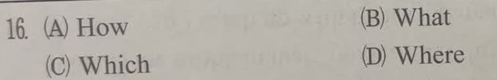
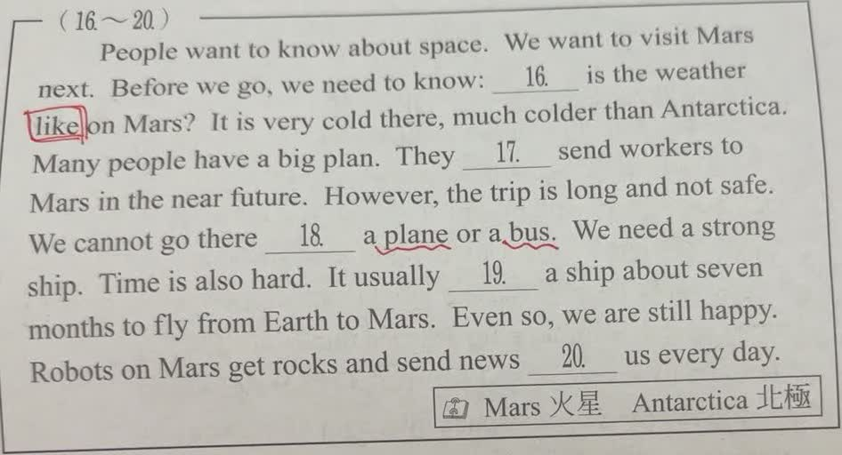
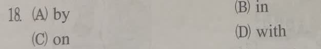

完整原題
作答所需文章／材料
People want to know about space. We want to visit Mars next. Before we go, we need to know: ___16___ is the weather like on Mars? It is very cold there, much colder than Antarctica. Many people have a big plan. They ___17___ send workers to Mars in the near future. However, the trip is long and not safe. We cannot go there ___18___ a plane or a bus. We need a strong ship. Time is also hard. It usually ___19___ a ship about seven months to fly from Earth to Mars. Even so, we are still happy. Robots on Mars get rocks and send news ___20___ us every day. 原卷字詞：Mars 火星；Antarctica 南極。 原卷將Antarctica誤註為「北極」，此處校正；其餘文章及空格依原題保留。英文第16題｜詢問天氣的What句型
英文第18題｜on a plane與by plane
先想一想，再查看答案、解說與原圖
英文第16題｜詢問天氣的What句型
分享原卷｜第 16 題 · 首次出題日期 2026-10-21 · 原AI對話 ↗
逐項解析
| 選項與原句 | 判讀 | 句意與判斷理由 |
|---|---|---|
| (A) How | 不選 | How is the weather?可詢問天氣，但不再加like；本句已有like。 |
| (B) What | 應選 | What is the weather like?是詢問天氣如何的正確句型。 |
| (C) Which | 不選 | Which問哪一個，不符合本句詢問天氣狀況的搭配。 |
| (D) Where | 不選 | Where問地點，而on Mars已交代地點，本句不是問天氣在哪裡。 |
詳細說明與解題步驟
一、先找空格以外的句型線索
句尾已有like，完整句型應為What is the weather like?，表示天氣如何，所以選B。
二、把兩種問法分開
How is the weather?與What is the weather like?都可詢問天氣，但不能把兩個句型混成How is the weather like?。
三、用回答反查題意
後文說It is very cold there，是回答天氣狀況，不是位置或哪一個天氣。
快速判斷：看到weather後面已有like，用What；若沒有like，才可用How is the weather?。
① 有 like，用 What
What is the weather like? 是「天氣如何？」本題句尾已有 like，因此空格選 What。
② 另一種問法用 How
How is the weather? 也可詢問天氣，但這個句型沒有 like。兩種完整問法要分開記。
③ 用後文確認問的內容
後文 It is very cold there. 回答那裡很冷，談的是天氣狀況。on Mars 已交代地點，不必再用 Where。
④ 問天氣，先看句尾有沒有 like
答案 B：What
- What is the weather like?
- How is the weather?
- 本題已有 like，不能混成 How…like?。
核對註記：已核對題幹、全部選項與必要材料；教材對應課次未確認，歸綜合。
原圖（僅本題）


英文第18題｜on a plane與by plane
分享原卷｜第 18 題 · 首次出題日期 2026-10-21 · 原AI對話 ↗
逐項解析
| 選項與原句 | 判讀 | 句意與判斷理由 |
|---|---|---|
| (A) by | 不選 | by後面直接接交通工具名詞，如by plane、by bus，不能在本句接a plane。 |
| (B) in | 不選 | 一般說in a car或in a taxi；本句plane及bus通常用on。 |
| (C) on | 應選 | on a plane、on a bus是本句正確的搭配，保留冠詞a。 |
| (D) with | 不選 | with表示伴隨或使用某物，並非本句表搭乘交通工具的標準搭配。 |
詳細說明與解題步驟
一、注意交通工具前面有a
若用by，通常說by plane、by bus，名詞前不加a。本句已印有a plane or a bus，因此不能直接選A。
二、比較on與in的搭配
一般說on a plane、on a bus、on a train；小客車及計程車則常說in a car、in a taxi。本句選C on。
三、回到完整句子
We cannot go there on a plane or a bus. 表示不能搭一般飛機或公車前往火星，後文因此說需要強大的太空船。
快速判斷：by plane沒有a；on a plane保留a。先看題目是否已給冠詞。
① 搭飛機：on a plane
本題已印出 a plane。一般說 on a plane；若用 by，則說 by plane，交通工具名詞前不加 a。
② 搭公車：on a bus
公車也常用 on a bus。本句把 a plane 與 a bus 並列，所以同一個 on 能與兩者搭配。
③ 小客車常用 in
小客車或計程車常說 in a car、in a taxi。這是搭配習慣；on a plane 不表示人坐在飛機屋頂上。
④ 先看冠詞，再選交通介系詞
答案 C：on
- by plane／by bus：不加 a。
- on a plane／on a bus：保留 a。
- 回原文：不能搭一般飛機或公車到火星，需要太空船。
核對註記：已核對題幹、全部選項與必要材料；教材對應課次未確認，歸綜合。
原圖（僅本題）

